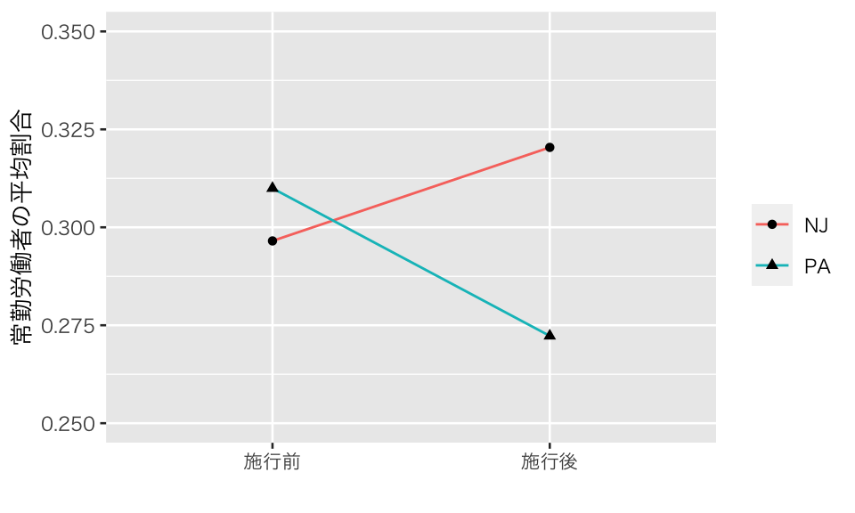

Topic 6 パネルデータ分析
6.1 準備
6.1.1 予習、講義動画、実習課題
このトピックでやるべきことは、以下のとおりである。
- シラバス(PDFファイル) に記載されているトピック6の予習課題を読む。
- KUTLMS (Moodle) にあるトピック6の講義動画を視聴する。
- この資料の続きを読み、Rを使った実習を行うことで、傾向スコアの使い方を学ぶ。
- 教科書 (安井 2020) 第4章のRを使った分析を自分でやってみる。
- 課題を提出する。
6.1.2 Rパッケージの読み込み
必要なパッケージを読み込み、作図用の日本語フォントを設定する。
pacman::p_load(tidyverse, broom, estimatr)
theme_set(theme_gray(base_size = 10, base_family = "HiraginoSans-W3")) # macOS用
#theme_set(theme_gray(base_size = 10, base_family = "Meiryo")) # Windows用
#theme_set(theme_gray(base_size = 10, base_family = "IPAGothic")) # Ubuntu用
#showtext::showtext_auto() # Cloud用
#theme_set(theme_gray(base_size = 10, base_family = "noto")) # Cloud用6.1.3 関数の自作
6.1.4 このトピックで使うRコードの説明
6.2 差の差法
差の差 (difference in differences; DID) 法
Card and Krueger (1994) が分析した、最低賃金の上昇が失業に与える影響の研究を例に考えよう。データは、著者の一人である David Card 先生のウェブサイトで公開されている。ここでは、今井 (2018) （2.5節: pp.76-88）のデータを利用させてもらおう。
download.file(url = "http://qss.princeton.press/student-files/CAUSALITY/minwage.csv",
destfile = "data/minwage.csv")データを読み込み、中身を確認する。
## Rows: 358
## Columns: 8
## $ chain <chr> "wendys", "wendys", "burgerking", "burgerking", "kfc", "kf…
## $ location <chr> "PA", "PA", "PA", "PA", "PA", "PA", "PA", "PA", "PA", "PA"…
## $ wageBefore <dbl> 5.00, 5.50, 5.00, 5.00, 5.25, 5.00, 5.00, 5.00, 5.00, 5.50…
## $ wageAfter <dbl> 5.25, 4.75, 4.75, 5.00, 5.00, 5.00, 4.75, 5.00, 4.50, 4.75…
## $ fullBefore <dbl> 20.0, 6.0, 50.0, 10.0, 2.0, 2.0, 2.5, 40.0, 8.0, 10.5, 6.0…
## $ fullAfter <dbl> 0.0, 28.0, 15.0, 26.0, 3.0, 2.0, 1.0, 9.0, 7.0, 18.0, 5.0,…
## $ partBefore <dbl> 20.0, 26.0, 35.0, 17.0, 8.0, 10.0, 20.0, 30.0, 27.0, 30.0,…
## $ partAfter <dbl> 36, 3, 18, 9, 12, 9, 25, 32, 39, 10, 20, 4, 13, 20, 15, 19…## chain location wageBefore wageAfter
## Length:358 Length:358 Min. :4.250 Min. :4.250
## Class :character Class :character 1st Qu.:4.250 1st Qu.:5.050
## Mode :character Mode :character Median :4.500 Median :5.050
## Mean :4.618 Mean :4.994
## 3rd Qu.:4.987 3rd Qu.:5.050
## Max. :5.750 Max. :6.250
## fullBefore fullAfter partBefore partAfter
## Min. : 0.000 Min. : 0.000 Min. : 0.00 Min. : 0.00
## 1st Qu.: 2.125 1st Qu.: 2.000 1st Qu.:11.00 1st Qu.:11.00
## Median : 6.000 Median : 6.000 Median :16.25 Median :17.00
## Mean : 8.475 Mean : 8.362 Mean :18.75 Mean :18.69
## 3rd Qu.:12.000 3rd Qu.:12.000 3rd Qu.:25.00 3rd Qu.:25.00
## Max. :60.000 Max. :40.000 Max. :60.00 Max. :60.00location の中身を確認する。
## location
## centralNJ northNJ PA shoreNJ southNJ
## 45 146 67 33 67ペンシルバニア (PA) は1つのカテゴリだが、ニュージャージー (NJ) は4つのカテゴリに分かれている。 場所をNJとPAの二つに分ける変数を作ろう。
PAとNJのデータを分ける。
賃金が5.05ドル以下のファーストフード店の割合。
minwage %>%
group_by(state) %>%
summarize(before = mean(wageBefore < 5.05),
after = mean(wageAfter < 5.05)) %>%
knitr::kable(digits = 3)| state | before | after |
|---|---|---|
| NJ | 0.911 | 0.003 |
| PA | 0.940 | 0.955 |
常勤労働者の割合を表す変数を作る。
常勤労働者の割合を表すデータを作る。
d_full <- minwage %>%
mutate(full_prop_before = fullBefore / (fullBefore + partBefore),
full_prop_after = fullAfter / (fullAfter + partAfter)) %>%
dplyr::select(state, starts_with("full_")) %>%
group_by(state) %>%
summarize(full_before = mean(full_prop_before),
full_after = mean(full_prop_after)) %>%
pivot_longer(cols = starts_with("full"),
names_to = "time",
names_prefix = "full_",
values_to = "prop") %>%
mutate(time = factor(time, levels = c("before", "after"),
label = c("施行前", "施行後")))## `summarise()` ungrouping output (override with `.groups` argument)p_did <- ggplot(d_full, aes(x = time, y = prop, group = state)) +
geom_line(aes(color = state)) +
geom_point(aes(shape = state)) +
ylim(0.25, 0.35) +
labs(x = "", y = "常勤労働者の平均割合") +
scale_color_discrete(name = "") +
scale_shape_discrete(name = "")
plot(p_did)
平均の差を計算する。
minwage %>%
group_by(state) %>%
summarize(full_prop = mean(full_prop_after)) %>%
pull(full_prop) %>%
diff() * -1## [1] 0.04811886ファーストフード店の割合を確認する。
| burgerking | kfc | roys | wendys | |
|---|---|---|---|---|
| NJ | 0.4054983 | 0.2233677 | 0.2508591 | 0.1202749 |
| PA | 0.4626866 | 0.1492537 | 0.2238806 | 0.1641791 |
バーガーキングのみ取り出す。
minw_NJ.bk <- minw_NJ %>% filter(chain == "burgerking")
minw_PA.bk <- minw_PA %>% filter(chain == "burgerking")常勤雇用の割合を比較する。
## Warning: Unknown or uninitialised column: `fullPropAfter`.## Warning in mean.default(minw_NJ.bk$fullPropAfter): argument is not numeric or
## logical: returning NA## Warning: Unknown or uninitialised column: `fullPropAfter`.## Warning in mean.default(minw_PA.bk$fullPropAfter): argument is not numeric or
## logical: returning NA## [1] NA6.3 合成コントロール法
合成コントロール法 (統合制御法, synthetic control method; SCM)
6.4 トピック6の課題
- 課題レポートは R Markdown で作成し、PDF に knit して提出すること。
- 提出するファイル：metrics_hw06_LastFirst.pdf
- 提出方法：Slack のダイレクトメッセージで提出。
- 提出期限：2020年7月13日（月）正午（日本時間）
- トピック6, 8, 9 の課題からどれか2つを選んで提出
- どの2つを選んでも良いが、提出期限が異なるので注意
- 3つとも提出した場合、最も評価が低いものを成績評価の対象から外す
参考文献
Card, David, and Alan B. Krueger. 1994. “Minimum Wages and Employment: A Case Study of the Fast-Food Industry in New Jersey and Pennsylvania.” American Economic Review 84 (4): 772–93. https://pubs.aeaweb.org/doi/pdf/10.1257/aer.90.5.1362.
今井耕介. 2018. 社会科学のためのデータ分析入門（上）（下）. 岩波書店. https://www.iwanami.co.jp/book/b352348.html.
安井翔太. 2020. 効果検証入門：正しい比較のための因果推論/計量経済学の基礎. 技術評論社.